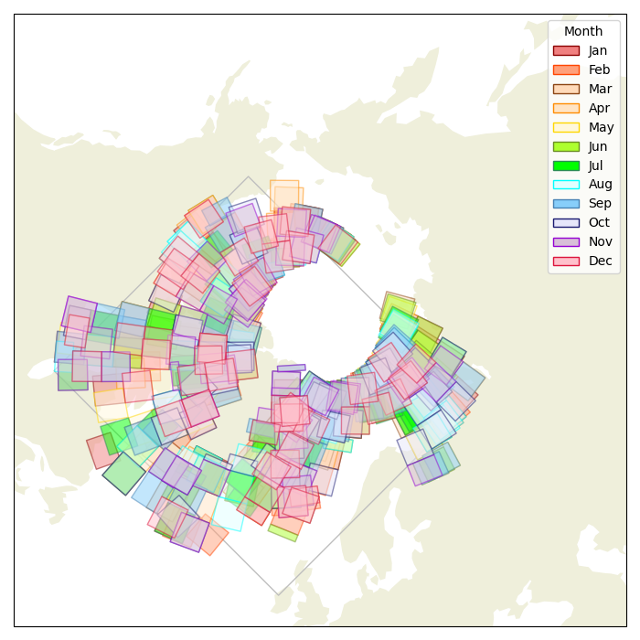

A listing of C-band SAR image files from Sentinel-1A. The spatial distribution of scenes are shown below color coded by month of acquisition.
Click on "Thumbnail" to see larger image.
| Native-ID | Acquisition Date | Size MB | Thumbnail |
|---|---|---|---|
| S1A_EW_GRDM_1SDH_20210103T014533_20210103T014633_035967_0436A0_73D3-GRD_MD | 2021-01-03T01:46:33+00:00 | 225.73 | |
| S1A_EW_GRDM_1SDH_20210111T053353_20210111T053458_036086_043AC9_02C3-GRD_MD | 2021-01-11T05:34:58+00:00 | 237.41 | |
| S1A_EW_GRDM_1SDH_20210111T134735_20210111T134839_036091_043AF8_27FE-GRD_MD | 2021-01-11T13:48:39+00:00 | 254.59 | |
| S1A_EW_GRDM_1SDH_20210111T152824_20210111T152924_036092_043B00_A9E1-GRD_MD | 2021-01-11T15:29:24+00:00 | 228.95 | |
| S1A_EW_GRDM_1SDH_20210126T055937_20210126T060040_036305_04426B_10DF-GRD_MD | 2021-01-26T06:00:40+00:00 | 233.45 | |
| S1A_EW_GRDM_1SDH_20210213T164023_20210213T164129_036574_044BC6_1E18-GRD_MD | 2021-02-13T16:41:29+00:00 | 252.66 | |
| S1A_EW_GRDM_1SDH_20210216T201358_20210216T201411_036620_044D59_DA38-GRD_MD | 2021-02-16T20:14:11+00:00 | 54.42 | |
| S1A_EW_GRDM_1SDH_20210217T205435_20210217T205535_036635_044DEE_3A40-GRD_MD | 2021-02-17T20:55:35+00:00 | 240.30 | |
| S1A_EW_GRDM_1SDH_20210221T072048_20210221T072153_036685_044FA1_7EE0-GRD_MD | 2021-02-21T07:21:53+00:00 | 242.20 | |
| S1A_EW_GRDM_1SDH_20210227T081012_20210227T081116_036773_0452BC_D09E-GRD_MD | 2021-02-27T08:11:16+00:00 | 241.61 | |
| S1A_EW_GRDM_1SDH_20210304T181157_20210304T181257_036852_04556E_F39B-GRD_MD | 2021-03-04T18:12:57+00:00 | 205.75 | |
| S1A_EW_GRDM_1SDH_20210305T121718_20210305T121822_036863_0455C8_0551-GRD_MD | 2021-03-05T12:18:22+00:00 | 281.25 | |
| S1A_EW_GRDM_1SDH_20210308T024917_20210308T025022_036901_045722_77F3-GRD_MD | 2021-03-08T02:50:22+00:00 | 227.77 | |
| S1A_EW_GRDM_1SDH_20210317T104159_20210317T104259_037037_045BE1_D86C-GRD_MD | 2021-03-17T10:42:59+00:00 | 233.21 | |
| S1A_EW_GRDM_1SDH_20210326T065913_20210326T070012_037166_046055_D0BE-GRD_MD | 2021-03-26T07:00:12+00:00 | 206.15 | |
| S1A_EW_GRDM_1SDH_20210412T120509_20210412T120609_037417_046909_9866-GRD_MD | 2021-04-12T12:06:09+00:00 | 234.90 | |
| S1A_EW_GRDM_1SDH_20210412T120709_20210412T120758_037417_046909_344F-GRD_MD | 2021-04-12T12:07:58+00:00 | 175.50 | |
| S1A_EW_GRDM_1SDH_20210418T191536_20210418T191636_037509_046C35_2F1C-GRD_MD | 2021-04-18T19:16:36+00:00 | 217.20 | |
| S1A_EW_GRDM_1SDH_20210424T120310_20210424T120410_037592_046F12_348E-GRD_MD | 2021-04-24T12:04:10+00:00 | 251.58 | |
| S1A_EW_GRDM_1SDH_20210426T033332_20210426T033432_037616_046FEC_9D78-GRD_MD | 2021-04-26T03:34:32+00:00 | 219.71 | |
| S1A_EW_GRDM_1SDH_20210504T054309_20210504T054357_037734_047403_DDB0-GRD_MD | 2021-05-04T05:43:57+00:00 | 172.13 | |
| S1A_EW_GRDM_1SDH_20210510T130733_20210510T130833_037826_0476F0_A679-GRD_MD | 2021-05-10T13:08:33+00:00 | 247.24 | |
| S1A_EW_GRDM_1SDH_20210520T181113_20210520T181213_037975_047B6A_5609-GRD_MD | 2021-05-20T18:12:13+00:00 | 192.80 | |
| S1A_EW_GRDM_1SDH_20210522T210832_20210522T210936_038006_047C58_95F2-GRD_MD | 2021-05-22T21:09:36+00:00 | 204.99 | |
| S1A_EW_GRDM_1SDH_20210524T075450_20210524T075550_038027_047CF1_C655-GRD_MD | 2021-05-24T07:55:50+00:00 | 212.82 | |
| S1A_EW_GRDM_1SDH_20210614T140611_20210614T140711_038337_048639_EA36-GRD_MD | 2021-06-14T14:07:11+00:00 | 212.57 | |
| S1A_EW_GRDM_1SDH_20210620T014332_20210620T014436_038417_04888A_EBE2-GRD_MD | 2021-06-20T01:44:36+00:00 | 234.87 | |
| S1A_EW_GRDM_1SDH_20210623T021017_20210623T021117_038461_0489D1_F815-GRD_MD | 2021-06-23T02:11:17+00:00 | 223.60 | |
| S1A_EW_GRDM_1SDH_20210627T031607_20210627T031707_038520_048BB4_225E-GRD_MD | 2021-06-27T03:17:07+00:00 | 208.38 | |
| S1A_EW_GRDM_1SDH_20210630T195537_20210630T195637_038574_048D41_BF90-GRD_MD | 2021-06-30T19:56:37+00:00 | 188.09 | |
| S1A_EW_GRDM_1SDH_20210708T073112_20210708T073210_038683_049093_72E2-GRD_MD | 2021-07-08T07:32:10+00:00 | 184.65 | |
| S1A_EW_GRDM_1SDH_20210709T081122_20210709T081222_038698_04910E_73CC-GRD_MD | 2021-07-09T08:12:22+00:00 | 223.95 | |
| S1A_EW_GRDM_1SDH_20210718T173908_20210718T173923_038835_049523_7382-GRD_MD | 2021-07-18T17:39:23+00:00 | 46.72 | |
| S1A_EW_GRDM_1SDH_20210722T121217_20210722T121257_038890_0496C7_C877-GRD_MD | 2021-07-22T12:12:57+00:00 | 150.99 | |
| S1A_EW_GRDM_1SDH_20210726T114334_20210726T114406_038948_049880_7E18-GRD_MD | 2021-07-26T11:44:06+00:00 | 116.27 | |
| S1A_EW_GRDM_1SDH_20210808T153544_20210808T153653_039140_049E81_40FB-GRD_MD | 2021-08-08T15:36:53+00:00 | 246.01 | |
| S1A_EW_GRDM_1SDH_20210809T161549_20210809T161654_039155_049F0C_6ACD-GRD_MD | 2021-08-09T16:16:54+00:00 | 224.91 | |
| S1A_EW_GRDM_1SDH_20210817T115359_20210817T115459_039269_04A2FE_B560-GRD_MD | 2021-08-17T11:54:59+00:00 | 192.20 | |
| S1A_EW_GRDM_1SDH_20210823T074632_20210823T074732_039354_04A5E1_EA10-GRD_MD | 2021-08-23T07:47:32+00:00 | 193.93 | |
| S1A_EW_GRDM_1SDH_20210826T162506_20210826T162606_039403_04A794_631A-GRD_MD | 2021-08-26T16:26:06+00:00 | 230.89 | |
| S1A_EW_GRDM_1SDH_20210901T054212_20210901T054316_039484_04AA54_9EBF-GRD_MD | 2021-09-01T05:43:16+00:00 | 215.21 | |
| S1A_EW_GRDM_1SDH_20210918T122829_20210918T122933_039736_04B301_844B-GRD_MD | 2021-09-18T12:29:33+00:00 | 256.91 | |
| S1A_EW_GRDM_1SDH_20210922T115900_20210922T120000_039794_04B4EE_D86E-GRD_MD | 2021-09-22T12:00:00+00:00 | 212.61 | |
| S1A_EW_GRDM_1SDH_20210927T120218_20210927T120318_039867_04B776_8C08-GRD_MD | 2021-09-27T12:03:18+00:00 | 216.30 | |
| S1A_EW_GRDM_1SDH_20210929T194727_20210929T194827_039901_04B8AC_7560-GRD_MD | 2021-09-29T19:48:27+00:00 | 202.13 | |
| S1A_EW_GRDM_1SDH_20211005T073831_20211005T073931_039981_04BB6C_FBE4-GRD_MD | 2021-10-05T07:39:31+00:00 | 221.74 | |
| S1A_EW_GRDM_1SDH_20211006T064156_20211006T064256_039995_04BBEF_C185-GRD_MD | 2021-10-06T06:42:56+00:00 | 218.22 | |
| S1A_EW_GRDM_1SDH_20211011T101038_20211011T101138_040070_04BE7F_FD97-GRD_MD | 2021-10-11T10:11:38+00:00 | 181.67 | |
| S1A_EW_GRDM_1SDH_20211019T104209_20211019T104309_040187_04C293_A933-GRD_MD | 2021-10-19T10:43:09+00:00 | 221.47 | |
| S1A_EW_GRDM_1SDH_20211025T045357_20211025T045454_040271_04C585_1850-GRD_MD | 2021-10-25T04:54:54+00:00 | 186.80 | |
| S1A_EW_GRDM_1SDH_20211104T132507_20211104T132607_040422_04CAC6_0918-GRD_MD | 2021-11-04T13:26:07+00:00 | 235.27 | |
| S1A_EW_GRDM_1SDH_20211105T055132_20211105T055232_040432_04CB20_F5DB-GRD_MD | 2021-11-05T05:52:32+00:00 | 198.08 | |
| S1A_EW_GRDM_1SDH_20211113T044437_20211113T044542_040548_04CF11_FF01-GRD_MD | 2021-11-13T04:45:42+00:00 | 241.64 | |
| S1A_EW_GRDM_1SDH_20211126T200352_20211126T200452_040747_04D5F6_967F-GRD_MD | 2021-11-26T20:04:52+00:00 | 200.39 | |
| S1A_EW_GRDM_1SDH_20211127T155922_20211127T160026_040759_04D666_918E-GRD_MD | 2021-11-27T16:00:26+00:00 | 257.17 | |
| S1A_EW_GRDM_1SDH_20211203T065721_20211203T065821_040841_04D94D_160A-GRD_MD | 2021-12-03T06:58:21+00:00 | 210.96 | |
| S1A_EW_GRDM_1SDH_20211217T032425_20211217T032525_041043_04E031_1DEA-GRD_MD | 2021-12-17T03:25:25+00:00 | 222.45 | |
| S1A_EW_GRDM_1SDH_20211217T082115_20211217T082215_041046_04E04F_2586-GRD_MD | 2021-12-17T08:22:15+00:00 | 255.87 | |
| S1A_EW_GRDM_1SDH_20211221T060759_20211221T060859_041103_04E21E_9539-GRD_MD | 2021-12-21T06:08:59+00:00 | 198.77 | |
| S1A_EW_GRDM_1SDH_20211226T191642_20211226T191717_041184_04E4D8_68B9-GRD_MD | 2021-12-26T19:17:17+00:00 | 138.58 | |